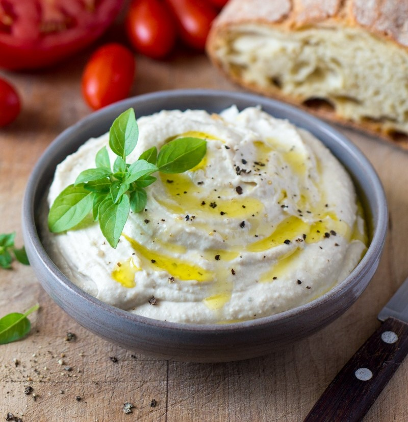

Ricotta de maní
Esta maravillosa ricotta vegana pueden disfrutarla en un aperitivo con unas ricas bruschetas acompañadas de tomatitos cherry y ciboulette.
Ingredientes:
- • 1 taza de maní sin sal
- • 2 cucharadas de levadura nutricional
- • Jugo de 2 limones
- • 1 o 2 cucharaditas de orégano
- • 1/3 taza de agua
- • Sal a gusto
Preparación:
- Dejar remojando el maní en agua durante toda la noche. Al día siguiente escurrir y enjuagar.
- Verter todos los ingredientes en una procesadora de alimentos.
- Procesar unos minutos hasta que la mezcla tome la consistencia deseada. ¡Y listo! ¡Eso es todo! ¡Es muy fácil!
Esta maravillosa ricotta vegana pueden disfrutarla en un aperitivo con unas ricas bruschetas acompañadas de tomatitos cherry y ciboulette, o en un exquisito sandwich con alguna hamburguesa de legumbres y hojas frescas, o en un súper bowl de vegetales surtidos con una buena cucharada de ricotta de maní en el centro.